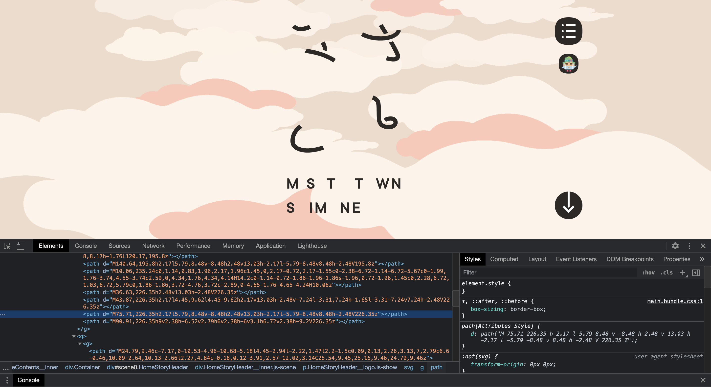

変更前
変更後
今回、島根県三郷町PRのwebサイトについて分析してみました。このWebサイトは『SHIFT BRAIN社』が「世界一のホームページを作ってください。」という三郷町からの依頼で作られました。
まず初めに現れるのは「みさとと。」というこの文字。最初はフォントを変えているか、画像を貼り付けていると思ったが実は全てHTML上で作られていた。下の「MISATO TOWN SHIMANE」までもがHTML作られていたのですごい...
下へスクロールして雲をかき分けると三郷町を上空から見たような地図が現れる。ここでは「どこにどういうものがあるか」がすぐに分かりとても良いと思う。
初めからすごいアニメーションで、開いた瞬間から心惹かれるWebサイトで興味を沸かせるのでPRサイトとして完璧！さらに下へスクロールすると三郷町のならではの文化や名産が紹介される。その場面ごとに移動するときのカメラワーク？場面の切り替えアニメーションがすごい。
雲や地図上のイラストがよく見ると動いている。HTML上で動いているのか、gifなのか映像を流しているのか分からなかったが、さらに見てみていくと窓に入って場面展開する瞬間がありもっと分からなくなった...笑。
gifと動画を、スクロールのスピードや方向によって変える事はできるのでしょうか？できるのであれば納得がいきますが、もしHTMLで作っている場合どうやって作っているのかすごく気になります。
個人的に一つは問題点を出してみようと思いましたが全く見つからなく、ポップなイラストに見やすい配色、文句の付け所がないwebサイトだと僕は思います。
このwebサイト以外にも調べてみたいものがいっぱいありましたが、地域PRのwebサイトでこれほどおしゃれで見やすいものがなかったので今回は「みさとと。」を分析してみました。
もし先生からの意見をもらえるのであれば、この背景のアニメーションがHTMLなのかgifなのか映像なのかがすごく気になるので教えて欲しいです。